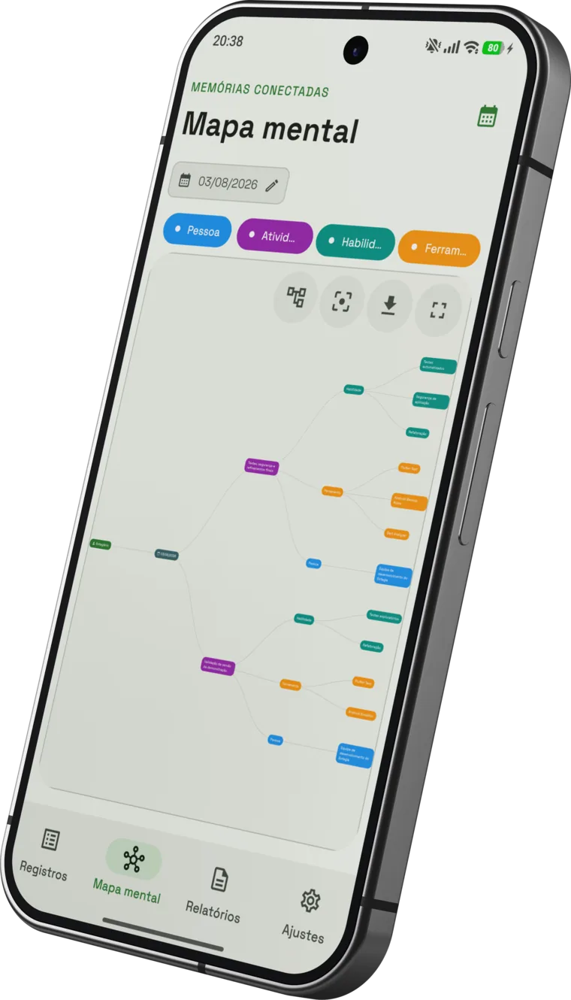
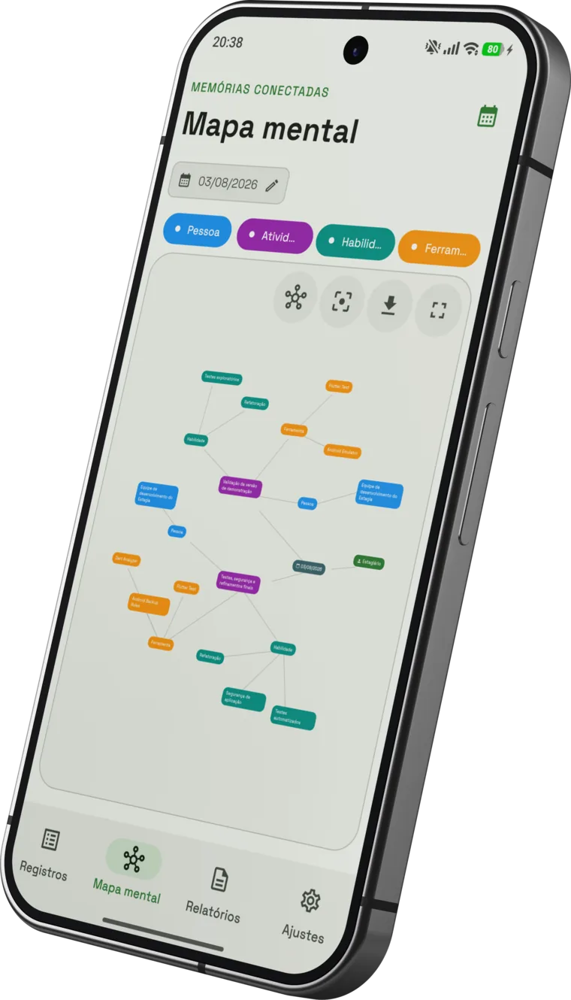
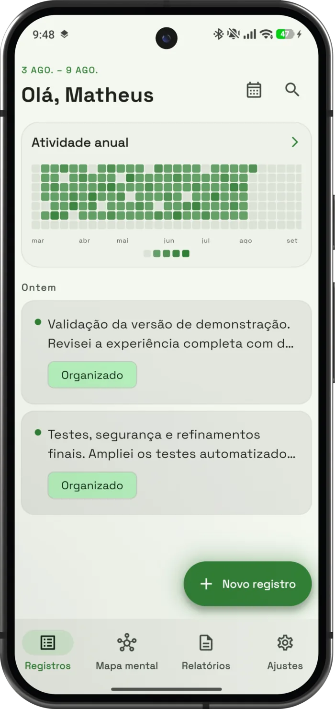
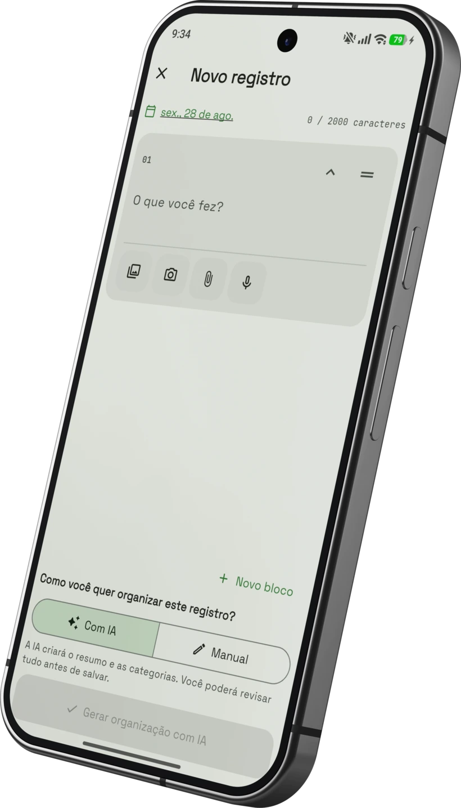
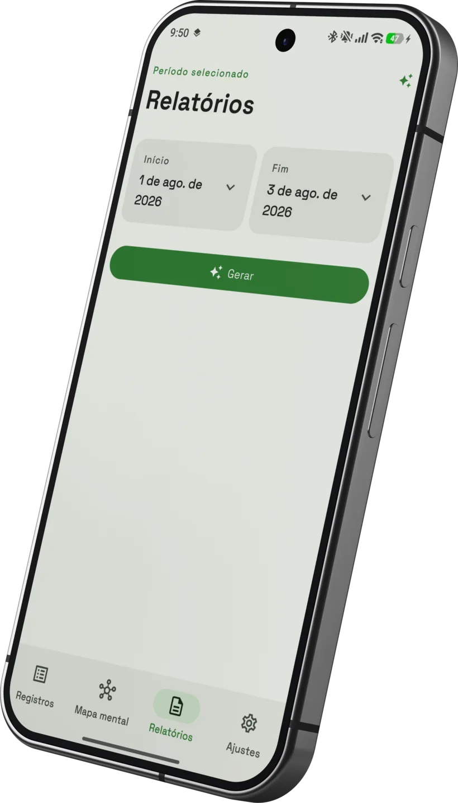

Veja o que você construiu
Pessoas, atividades, habilidades e ferramentas aparecem em um mapa mental criado a partir dos registros.


Seu diário de estágio
Registre atividades, acompanhe horas e transforme sua rotina em relatórios com inteligência artificial.

Escreva o que fez ou use a transcrição por voz. Organize o dia em blocos e mantenha cada atividade no lugar certo.

O Estagia conecta as memórias do seu trabalho e prepara o material que você precisa apresentar.
Pessoas, atividades, habilidades e ferramentas aparecem em um mapa mental criado a partir dos registros.


Escolha o período, revise o conteúdo e exporte o relatório em PDF quando estiver pronto.
A IA organiza o primeiro rascunho. Você revisa e mantém a palavra final.

O app funciona de forma local. Registrar uma atividade não depende de conexão com a internet ou de uma conta obrigatória.
Configure o provedor de inteligência artificial que preferir e mantenha o controle sobre a sua rotina de estágio. Leia a política completa →
Baixe o Estagia para Android e registre sua próxima atividade.
Fazer download